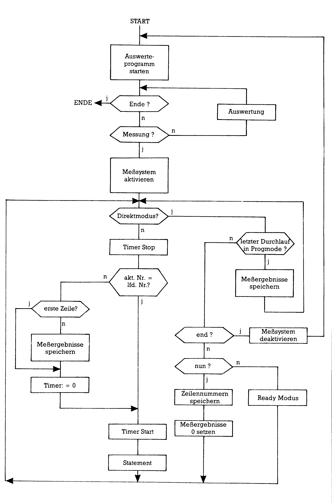

Das Maß der Dinge
Das exakte Ausmessen eines Unterprogrammes ist eine große Hilfe, um Laufzeiten zu verringern. Meist steht jedoch keine hinreichend genaue Uhr zur Verfügung. Wir bieten Ihnen zwei Lösungen an, eine für Maschinensprache- und eine für Basic-Programme.
Um die Laufzeiten von Programmen genau messen zu können, reicht die Stoppuhr für den 100-Meter-Lauf nicht mehr aus. Vor allem bei Maschinenprogrammen, bei denen die menschliche Reaktionsfähigkeit weit hinter der geforderten Genauigkeit bleibt. Doch auch die eingebaute interruptgesteuerte Uhr TI$ im C 64 versagt, wenn es um das Auszählen sehr kurzer Maschinenprogramme geht. Ladevorgänge können damit überhaupt nicht erfaßt werden, da TI$ während des Ladens stillsteht. Abhilfe schaffen hier die Timer der CIAs.
Taktzyklen zählen
Um Maschinensprache-Programme zu messen, ist es am besten, die Taktzyklen zu zählen. Dies liefert einen gut zu vergleichenden Wert. Geben Sie zunächst das Programm »Taktzyklen« (Listing 1) mit dem MSE ein und speichern Sie es. Aufgerufen wird die Routine durch den Befehl SYS49152,Startadresse
Die anzugebende Startadresse entspricht der des zu untersuchenden Maschinenprogrammes. Dieses Unterprogramm wird nun ausgeführt und die dafür benötigte Zeit bestimmt. Während dieses Ablaufes ist der Bildschirm ausgeblendet, er nimmt die Farbe des Rahmens an. Am Ende des zu messenden Programmes muß ein RTS stehen. Nach Programmende gibt das Programm den gemessenen Wert aus und springt in den Direkt-(READY.-)Modus. Der angezeigte Zahlenwert drückt die Anzahl der Systemtakte aus, die während der Abarbeitung des Maschinen-Unterprogrammes durch den Mikroprozessor verstrichen sind. Da ein solcher Takt etwa 1,015 Mikrosekunden dauert, läßt sich durch Multiplizieren mit diesem Faktor die benötigte Zeit in Mikrosekunden errechnen. Bei eingeschaltetem Bildschirm vergrößert sich das Ergebnis um etwa 5 bis 6 Prozent.
Beschreibung des Programms »Taktzyklen«
Die beim Aufruf des Programms übergebene Startadresse des zu messenden Unterprogramms wird als Operand für einen Sprungbefehl gespeichert. Anschließend wird die Möglichkeit der Unterbrechung durch einen IRQ ausgeschaltet, weil sonst ein falsches Resultat geliefert werden kann. Nach dem Ausblenden des Bildschirms lädt das Programm beide Timer des CIA 2 mit dem Maximalwert und koppelt sie miteinander. Sobald die Zähler gestartet sind, erfolgt der Sprung in das Unterprogramm, nach dessen Ende die Zähler sofort wieder gestoppt werden. Schließlich werden neben der Einrichtung des Normalzustandes — den Bildschirm und den IRQ betreffend — die Timer-Bytes ausgewertet. Dazu invertiert das Programm sämtliche Bits der von den Timern gelieferten Werte, da beide Registerpaare heruntergezählt werden. Zusätzlich werden noch elf Takte subtrahiert, die zum Starten beziehungsweise Stoppen der Timer und zum Aufruf des Unterprogramms nötig sind. Damit erhält man einen Meßbereich, der zwischen 1 und 232-11 Taktzyklen (entsprechend einer Zeit von 1 µs bis 1 Stunde 12 Minuten) liegt.
Laufzeit-Meß-System »LMS«
Das LMS wurde entwickelt, um die Laufzeit von Basic-Programmen zeilenbezogen messen zu können. Weiterhin sollte die Anzahl einzelner Aufrufe von Programmzeilen festgestellt werden können.
Einsatzmöglichkeiten
Das LMS ist im wesentlichen als Werkzeug für folgende Anwendungsfälle konzipiert.
1. Performance-Verbesserung von Basic-Programmen
Durch den Einsatz des LMS ist sofort erkennbar, wo die zeitmäßig kritischen Stellen eines Programms sind. Oft kann durch einige Veränderungen von Basic-Statements wertvolle Laufzeit eingespart werden. Sollte das nicht ausreichen, so ist der Einsatz von Maschinenroutinen angebracht.
Die Erfahrung zeigt, daß es selten notwendig ist, ein Programm vollständig in Assembler zu schreiben. Meist bringt ein begrenzter Einsatz von Maschinenroutinen an zeitkritischen Stellen ausreichende Geschwindigkeit unter Beibehaltung der Vorteile von Basic. Diese sind vor allem wesentlich bessere Lesbarkeit und Wartung sowie geringerer Erstellungsaufwand .
2. Testhilfe
Das Laufzeit-Meß-System stellt die Anzahl der Aufrufe von Basic-Zeilen fest. Es ist daher damit leicht überprüfbar, ob Programmzeilen überhaupt durchlaufen werden und wenn ja, ob die Anzahl der Aufrufe stimmt.
Mit dem LMS können auch Statements gemessen werden, die mit TI$ — abgesehen von der geringen Genauigkeit von TI$ — zu erfassen sind (zum Beispiel INPUT#).
Bedienungsanleitung
Geben Sie zuerst die Listings 3 bis 5 ein und speichern Sie diese auf einer Diskette. Nach dem Laden und Starten des Programms »LMS« erscheint nach kurzer Zeit ein Menü mit folgenden Wahlmöglichkeiten:
Messen (m)
Durch die Auswahl der Funktion »Messen« wird das eigentliche Meßprogramm aktiviert. Dies ist immer erkennbar an der roten Rahmenfarbe. Es wird eine Einschaltmeldung geschrieben und danach in den READY-Modus verzweigt. Jetzt muß das zu messende Programm eingegeben oder geladen werden.
Bei jedem Start des Programms werden für jede Programmzeile Laufzeit und Aufrufanzahl gespeichert. Wichtig ist, daß das Programm mit RUN gestartet wird. Ein Start mit GOTO oder CONT ist möglich, führt aber nicht zur Messung.
Durch die Eingabe von END im READY-Modus wird das Meßprogramm interaktiv, und es verzweigt anschließend wieder zum Hauptmenü, in dem die Meßergebnisse des letzten Programmlaufs ausgewertet werden können.
Anzeige ab Nr. (a)
Diese Funktion gestattet die Eingabe einer Zeilennummer, ab der die Meßergebnisse am Bildschirm angezeigt werden.
Der Bildschirm zeigt die jeweilige Zeilennummer, die Anzahl der Aufrufe dieser Zeile und die Gesamtverweilzeit des Basic-Interpreters in dieser Zeile. Bei einer Aufrufanzahl größer als eins wird zusätzlich die durchschnittliche Laufzeit pro Aufrufangezeigt.
Die jeweils größte Laufzeit ist zur leichteren Orientierung durch »*-« markiert.
Vorhergehende Seite (↑)
Durch Drücken der Taste (t) wird die Ausgabe am Bildschirm um eine Seite zurückgeblättert.
Nächste Seite (RETURN)
Die Bildschirmausgabe wird mit »RETURN« um eine Seite weitergeblättert.
Summe (s)
Diese Funktion erlaubt die Berechnung der Programmlaufzeit bezogen auf einen einzugebenden Zeilenbereich.
Drucken(d)
Die Auswahl dieser Funktion bewirkt die Ausgabe der Meßergebnisse auf Drucker. Durch die Angabe von Zeilennummern kann der Ausgabebereich eingegrenzt werden.
Hilfe (h)
Das Menü wird angezeigt.
Ende (e)
Der Computer wird nach Bestätigung der Auswahl in den Einschaltzustand versetzt.
Wird bei der Eingabe einer Zeilennummer nur »RETURN« gedrückt, so wird die Zeilennummer ab inklusive 0 und die Zeilennummer bis inklusive 63999 angenommen.
Hinweise
Das Meßverfahren kann auf Programme mit bis zu 1022 Zeilen angewandt werden. Der Basic-Speicher ist auf zirka 30 KByte verkürzt. Die maximal erfaßbare Anzahl von Zeilenaufrufen beträgt 65535. Die maximal meßbare Laufzeit pro Zeile beträgt etwa 72 Minuten.
Wenn das LMS aktiviert ist, braucht es etwa 0,9 Millisekunden (ms) pro Zeilenaufruf. Dies führt zu einer Verlängerung der Programmlaufzeit während der Messung. Die Meßergebnisse sind jedoch Netto-Laufzeiten; das heißt die angezeigten Zeiten entsprechen den Laufzeiten ohne Meßprogramm. Es ist zu beachten, daß Programmschleifen innerhalb einer Basic-Zeile vom LMS nicht erkannt werden. Dies liegt an der zeilenorientierten Arbeitsweise des LMS.
10 GET A$: IF A$="" THEN 10
ergibt als Anzahl der Aufrufe der Zeile 10 die Zahl 1.
Um die exakte Aufrufanzahl zu erhalten, muß die Zeile geteilt werden.
10 GET A$
20 IFA$="" THEN 10
ergibt die genaue Anzahl der Aufrufe.
Die gleiche Vorgangsweise ist auch für Zeilen angebracht, in denen nach einem GOSUB noch weitere Statements folgen. In diesem Fall wird nämlich nach der Rückkehr vom Unterprogramm die Aufrufanzahl der Zeile um 1 erhöht. Die ausgewiesene durchschnittliche Laufzeit ist in diesem Fall mit Vorsicht zu genießen.
Im Rahmen von mehreren Messungen an einem Programm treten in der Regel unterschiedliche Laufzeiten für dieselben Statements auf. Diese zunächst etwas verblüffende Feststellung hat ihre Ursache darin, daß für die Abarbeitung eines Basic-Befehls nicht immer die gleiche Anzahl von Instruktionen durchlaufen wird. Dies ergibt sich zum Beispiel durch Bildschirm-Scrolling, Interrupt-Behandlung oder Garbage Collection. Bei der Festlegung der Meßgenauigkeit wurde diese Tatsache berücksichtigt; das heißt nicht aussagekräftige Dezimalstellen wurden weggelassen.
Das LMS funktioniert nicht mit Programmen
— die den vom LMS belegten Speicher benötigen ($8000 bis $9FFF und $D000 bis $FFFF; siehe auch Programmbeschreibung),
— die Basic-Zeilen generieren oder
— die den NMI-Timer verwenden (zum Beispiel RS232-Programme).
Programmbeschreibung
Das Laufzeit-Meß-System besteht aus dem Maschinenprogramm »LMS.PHA« und den Basic-Programmen »LMS« und »LMS.BAS.«. »LMS.PHA« ist das eigentliche Meßprogramm. Es liegt im Speicherbereich $9CE0 bis $9FFF und wird bei seiner Aktivierung in die Basic-Interpreterschleife eingebunden. Für die Zeitmessung wird der Timer im CIA2 benutzt. Als Zeitbasis wird der Systemtakt verwendet. Die Meßergebnisse werden im RAM ab $D000 unter dem Betriebssystem abgelegt.
Der Ablauf einer Messung kann dem Flußdiagramm (siehe Bild 1) beziehungsweise dem Listing »LMS.ASS« entnommen werden. Die Aufbereitung und Auswertung der Meßergebnisse erfolgt im Programm »LMS.BAS«. Um ein abwechselndes Laden des in Basic geschriebenen Auswerteprogramms und des zu messenden Programms zu vermeiden, wird der Basic-Speicher derart geteilt, daß beide Programme gleichzeitig geladen sein können. LMS.BAS muß sich dabei mit weniger als 8 KByte ab Adresse $8000 begnügen.

Die Umschaltung des Basic-Speichers erfolgt in »LMS.PHA«. Beim Aktivieren des Meßprogramms wird das zu messende Programm zur Verfügung gestellt, beim Desaktivieren wird zum Auswerteprogrammm verzweigt.
Das Ladeprogramm »LMS« lädt zunächst »LMS.PHA«, damit die Maschinenroutinen zur Verfügung stehen. Danach teilt und initialisiert das Programm den Basic-Bereich. Zuletzt lädt und startet es das Auswerteprogramm.
Die Anpassung von »LMS.BAS« an unterschiedliche Drucker ist problemlos, da außer der Sekundäradresse 7 keine speziellen Steuercodes verwendet wurden.
Für die Verwendung mit Datassette müssen die im Programmlisting LMS enthaltenen Hinweise beachtet werden.
(Mark Richters/Franz Stoiber/og)